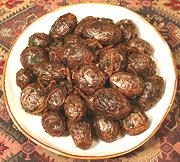

|
Kashmir Fried PotatoesKashmir - India/Pakistan - Dum Aloo | ||||
| Serves: Effort: Sched: DoAhead: |
6 app *** 1 hr Yes |
This recipe makes an appetizer with flavors intense enough to serve just warm. There are a number of steps to do but they're all easy, reasonably fool proof, and can be done well ahead. | |||
|
1-1/2 3 ------ 1 3 1/2 2 2/3 ------ 1 3 2 1 2/3 |
# T --- T t t --- in T T c t |
Potatoes, tiny Mustard Oil (1) -- Spices Coriander seed Chili, green (2) Cloves, whole Chili powder (3) Salt ------------- Ginger Cilantro Oil or Gee Water Garam Masala (4) |
PREP - (45 min)
|